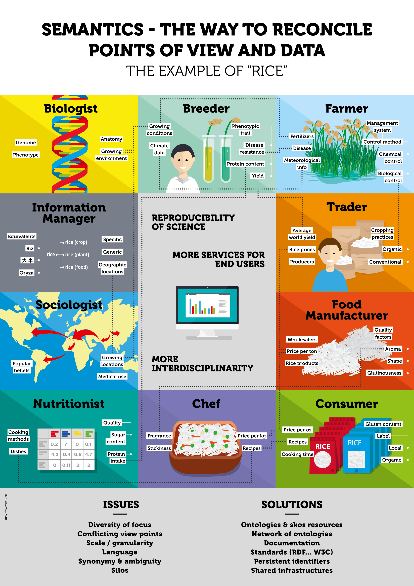

Semantics for the Interoperability of Agricultural Data
Modern agriculture needs data on a wide range of topics, from crop yields to soil composition and rainfall, in a wide range of digital formats, from spreadsheets to maps. How well such diverse data sources can be integrated to solve specific problems in agriculture depends in part on whether its "meaning" is correctly defined, which allows it to be used in a straightforward manner in different information systems ("semantic interoperability").
Much is ongoing in the area of semantic interoperability, in particular for agriculture:
International Initiatives
- The Agrisemantics WG at RDA gathers researchers and practitioners interested in producing and accessing more interoperable data in agriculture. To this end, the WG produced a set of recommendations to facilitate the use of semantics on data for agriculture and nutrition. All of these recommendations are up for discussion, please see the respective issue (github) to contribute.
Standard vocabularies and classifications
- A catalog of standards for agriculture is provided by the Agrisemantics Map of Standards.
- A repository of ontologies: AgroPortal
- The Global Agricultural Concept Space (GACS)
- Statistical classifications for agriculture as Linked Open Vocabularies Caliper.
Tools
